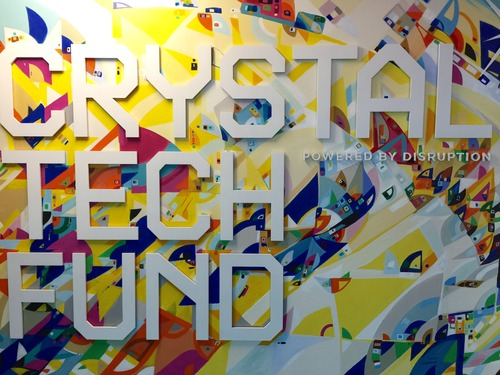

Here We Go!

Hello, My name is Su Kim, and I am the Campus Director at our new
DC/Arlington campus I am coming to The Iron Yard after years of policy advocacy in human rights and immigration reform. My passions are people and removing barriers that stand in the way of people being the best they are. I am excited to see how we at The Iron Yard can showcase the best of technology through passionate, driven, creative, and well-equipped individuals that go on to tackle the problems of the world or to realize an amazing idea.
A little introduction to our space & neighbors:
The Iron Yard is so thrilled to be among brilliant and creative minds on the 10th floor of 2231 Crystal Drive. The space where The Iron Yard will occupy is still being built out, so I have being hanging out on the other side. Here is a bit of the awesomeness of every day at
Disruption Corporation HQ.



The 10th floor has an incredible view of the Ronald Reagan National Airport and is a short walking distance from Crystal City Metro Station and bus stops.

And of course, great coffee is a must!

The space is a great reminder that we are a part of something bigger, and I'm excited to see The Iron Yard and our students play a role in making DC and Crystal City an increasingly tech-friendly and tech-inspiring neighborhood.
Stay tuned for more news as we get closer to launch of our inaugral cohort. And reminder, you can still
apply for our January classes. We're offering 3 courses in Mobile, Rails, and Front End Engineering.